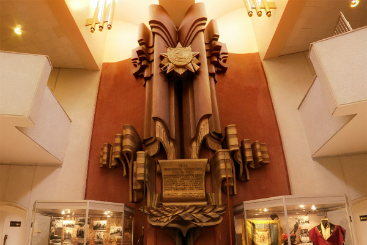

С 1995 г. в музее стал действовать выставочный зал. Это значительно расширило возможности выставочной деятельности и вызвало совершенно новые формы ее проведения, привело к новым партнерским отношениям с ведущими музеями страны. За прошедшие годы в музее проведено более 100 выставок. Проходящие в зале временные выставки всегда вызывали и вызывают большой интерес у белгородцев и гостей города.
В центре зала барельефная композиция, выполненная белгородским художником Е.В. Поленовым. Два высоких пилона в форме боевых знамён с лентами венчает изображение Ордена Отечественной войны 1-й степени, которым был награждён г. Белгород в 1980г. за успехи в восстановлении разрушенного войной хозяйства.

В нижней части барельефной композиции помещён символический свиток с текстом Указа о награждении города этим орденом.